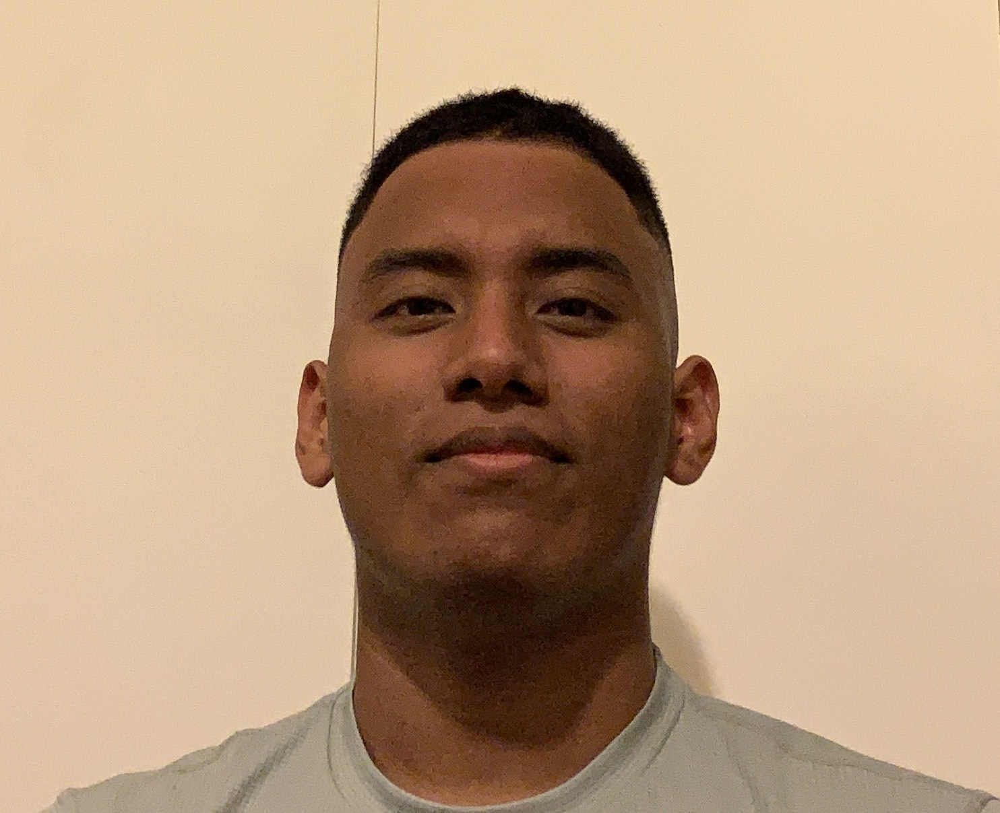

About me
My full name is Carlos Jeffrey Carvajal Rodriguez, I’m from Colombia and I’m 22 years old, the part of Colombia where I come from is Called SAI and its and island located on the Caribbean Sea, close to the coast of Nicaragua, and the languages spoken over there are Spanish and creole, but I cannot speak the second one.
This is my second time visiting Canada and I arrived on april 9th of 2021, but I was staying in Vancouver before moving to Ottawa. The first time I came to Canada was in 2017 and I traveled to Toronto to learn and practice my English for a total of 9 months where I was also able to visit and learn about many different places in the city.
Believe you can and you're halfway there. - Theodore Roosevelt